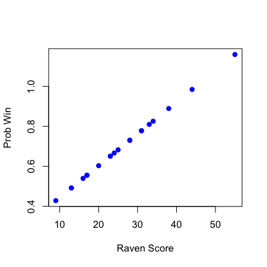
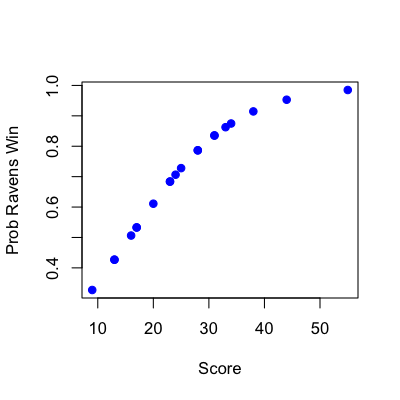

- Frequently we care about outcomes that have two values
- Alive/dead
- Win/loss
- Success/Failure
- etc
- Called binary outcomes or 0/1 outcomes
- Linear regression (like we've seen) may not be the best
Binary outcomes
Jeffrey Leek, Assistant Professor of Biostatistics
Johns Hopkins Bloomberg School of Public Health
Key ideas
Example: Baltimore Ravens

Ravens Data
download.file("https://dl.dropboxusercontent.com/u/7710864/data/ravensData.rda",
destfile="./data/ravensData.rda",method="curl")
load("./data/ravensData.rda")
head(ravensData)
ravenWinNum ravenWin ravenScore opponentScore
1 1 W 24 9
2 1 W 38 35
3 1 W 28 13
4 1 W 34 31
5 1 W 44 13
6 0 L 23 24
Linear regression
\[ RW_i = b_0 + b_1 RS_i + e_i \]
\(RW_i\) - 1 if a Ravens win, 0 if not
\(RS_i\) - Number of points Ravens scored
\(b_0\) - probability of a Ravens win if they score 0 points
\(b_1\) - increase in probability of a Ravens win for each additional point
\(e_i\) - variation due to everything we didn't measure
Linear regression in R
lmRavens <- lm(ravensData$ravenWinNum ~ ravensData$ravenScore)
summary(lmRavens)
Call:
lm(formula = ravensData$ravenWinNum ~ ravensData$ravenScore)
Residuals:
Min 1Q Median 3Q Max
-0.730 -0.508 0.182 0.322 0.572
Coefficients:
Estimate Std. Error t value Pr(>|t|)
(Intercept) 0.28503 0.25664 1.11 0.281
ravensData$ravenScore 0.01590 0.00906 1.76 0.096 .
---
Signif. codes: 0 '***' 0.001 '**' 0.01 '*' 0.05 '.' 0.1 ' ' 1
Residual standard error: 0.446 on 18 degrees of freedom
Multiple R-squared: 0.146, Adjusted R-squared: 0.0987
F-statistic: 3.08 on 1 and 18 DF, p-value: 0.0963
Linear regression
plot(ravensData$ravenScore,lmRavens$fitted,pch=19,col="blue",ylab="Prob Win",xlab="Raven Score")

Odds
Binary Outcome 0/1
\[RW_i\]
Probability (0,1)
\[\rm{Pr}(RW_i | RS_i, b_0, b_1 )\]
Odds \((0,\infty)\) \[\frac{\rm{Pr}(RW_i | RS_i, b_0, b_1 )}{1-\rm{Pr}(RW_i | RS_i, b_0, b_1)}\]
Log odds \((-\infty,\infty)\)
\[\log\left(\frac{\rm{Pr}(RW_i | RS_i, b_0, b_1 )}{1-\rm{Pr}(RW_i | RS_i, b_0, b_1)}\right)\]
Linear vs. logistic regression
Linear
\[ RW_i = b_0 + b_1 RS_i + e_i \]
or
\[ E[RW_i | RS_i, b_0, b_1] = b_0 + b_1 RS_i\]
Logistic
\[ \rm{Pr}(RW_i | RS_i, b_0, b_1) = \frac{\exp(b_0 + b_1 RS_i)}{1 + \exp(b_0 + b_1 RS_i)}\]
or
\[ \log\left(\frac{\rm{Pr}(RW_i | RS_i, b_0, b_1 )}{1-\rm{Pr}(RW_i | RS_i, b_0, b_1)}\right) = b_0 + b_1 RS_i \]
Interpreting Logistic Regression
\[ \log\left(\frac{\rm{Pr}(RW_i | RS_i, b_0, b_1 )}{1-\rm{Pr}(RW_i | RS_i, b_0, b_1)}\right) = b_0 + b_1 RS_i \]
\(b_0\) - Log odds of a Ravens win if they score zero points
\(b_1\) - Log odds ratio of win probability for each point scored (compared to zero points)
\(\exp(b_1)\) - Odds ratio of win probability for each point scored (compared to zero points)
Explaining Odds

Probability of Death

Odds of Death

Odds Ratio = 1, Continuous Covariate

Different odds ratios

Ravens logistic regression
logRegRavens <- glm(ravensData$ravenWinNum ~ ravensData$ravenScore,family="binomial")
summary(logRegRavens)
Call:
glm(formula = ravensData$ravenWinNum ~ ravensData$ravenScore,
family = "binomial")
Deviance Residuals:
Min 1Q Median 3Q Max
-1.758 -1.100 0.530 0.806 1.495
Coefficients:
Estimate Std. Error z value Pr(>|z|)
(Intercept) -1.6800 1.5541 -1.08 0.28
ravensData$ravenScore 0.1066 0.0667 1.60 0.11
(Dispersion parameter for binomial family taken to be 1)
Null deviance: 24.435 on 19 degrees of freedom
Residual deviance: 20.895 on 18 degrees of freedom
AIC: 24.89
Number of Fisher Scoring iterations: 5
Ravens fitted values
plot(ravensData$ravenScore,logRegRavens$fitted,pch=19,col="blue",xlab="Score",ylab="Prob Ravens Win")

Odds ratios and confidence intervals
exp(logRegRavens$coeff)
(Intercept) ravensData$ravenScore
0.1864 1.1125
exp(confint(logRegRavens))
2.5 % 97.5 %
(Intercept) 0.005675 3.106
ravensData$ravenScore 0.996230 1.303
ANOVA for logistic regression
anova(logRegRavens,test="Chisq")
Analysis of Deviance Table
Model: binomial, link: logit
Response: ravensData$ravenWinNum
Terms added sequentially (first to last)
Df Deviance Resid. Df Resid. Dev Pr(>Chi)
NULL 19 24.4
ravensData$ravenScore 1 3.54 18 20.9 0.06 .
---
Signif. codes: 0 '***' 0.001 '**' 0.01 '*' 0.05 '.' 0.1 ' ' 1
Simpson's paradox

Interpreting Odds Ratios
- Not probabilities
- Odds ratio of 1 = no difference in odds
- Log odds ratio of 0 = no difference in odds
- Odds ratio < 0.5 or > 2 commonly a "moderate effect"
- Relative risk \(\frac{\rm{Pr}(RW_i | RS_i = 10)}{\rm{Pr}(RW_i | RS_i = 0)}\) often easier to interpret, harder to estimate
- For small probabilities RR \(\approx\) OR but they are not the same!
Further resources
- Wikipedia on Logistic Regression
- Logistic regression and glms in R
- Brian Caffo's lecture notes on: Simpson's paradox, Case-control studies
- Open Intro Chapter on Logistic Regression